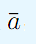
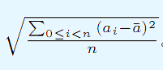

Wayne在玩儿一个很有趣的游戏。在游戏中，Wayne建造了N个城市，现在他想在这些城市间修一些公路，当然并不是任意两个城市间都能修，为了道路系统的美观，一共只有M对城市间能修公路，即有若干三元组 (Ui,Vi,Ci)表示Ui和Vi间有一条长度为Ci的双向道路。当然，游戏保证了，若所有道路都修建，那么任意两城市可以互相到达。Wayne拥有恰好N-1支修建队，每支队伍能且仅能修一条道路。当然，修建长度越大，修建的劳累度也越高，游戏设定是修建长度为C的公路就会有C的劳累度。当所有的队伍完工后，整个城市群必须连通，而这些修建队伍们会看看其他队伍的劳累情况，若劳累情况差异过大，可能就会引发骚动，不利于社会和谐发展。Wayne对这个问题非常头疼，于是他想知道，这N1支队伍劳累度的标准差最小能有多少。
标准差的定为：设有N个数，分别为ai,它们的平均数为 ,那么标准差就是
